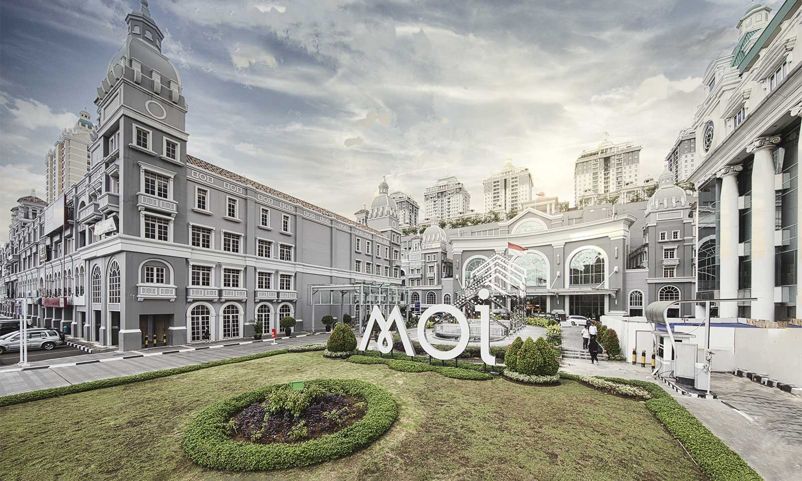
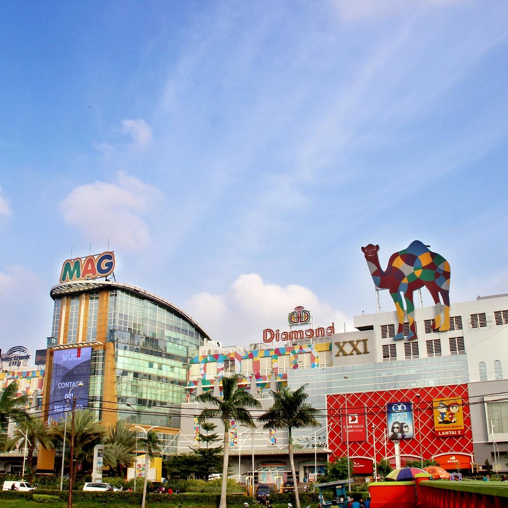

관광지
|  |
 |
 |
추천하는 여행지
1. MOI(Mall of Indonesia)는 한국의 백화점이아니라 코엑스라고 생각하면 된다. 몰 안에는 카페, 음식점, 쇼핑센터 그리고 놀이기구까지 있다. 그리고 인도네시아 전통 바틱 공예 기념품도 있고 다른곳보다 저렴한 편이다.
2. 모나스 국립기념탑은 이 랜드마크는 오벨리스크 모양으로 그 높이가 137미터에 달한다. 불꽃조각을 나타내는 14.5미터의 거대한 청동 장식품 위로 꼭대기는 32킬로그램의 금으로 이루어져다. 주말마다 음악 분수공연이 열리는 넓은 공원으로 둘러싸여 있다.
3. 안쫄 테마파크의 이 유원지는 자카르타의 북쪽, 자카르타만의 가장자리에 위치하고 있다. 이 곳은 대부분의 자카르타 시민들이 주말을 보내는 목적지이다. 이 공원은 씨월드 (아쿠아리움), 판타지 월드 (두니아 판타지/ 두판- 놀이공원), 아틀란티스 워터 어드벤쳐 및 마리나 해변과 같은 여러가지 활동이 가능한 체험장소들이 있다.